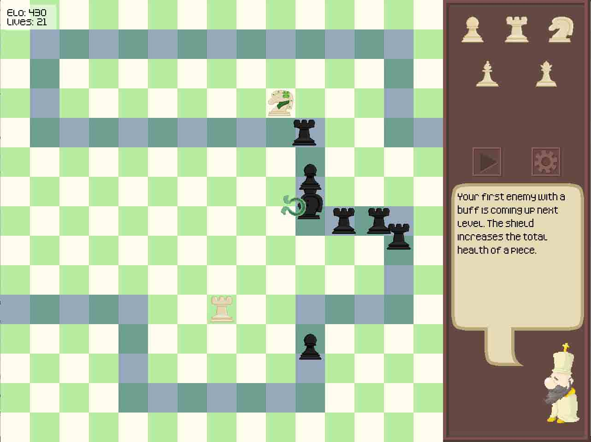
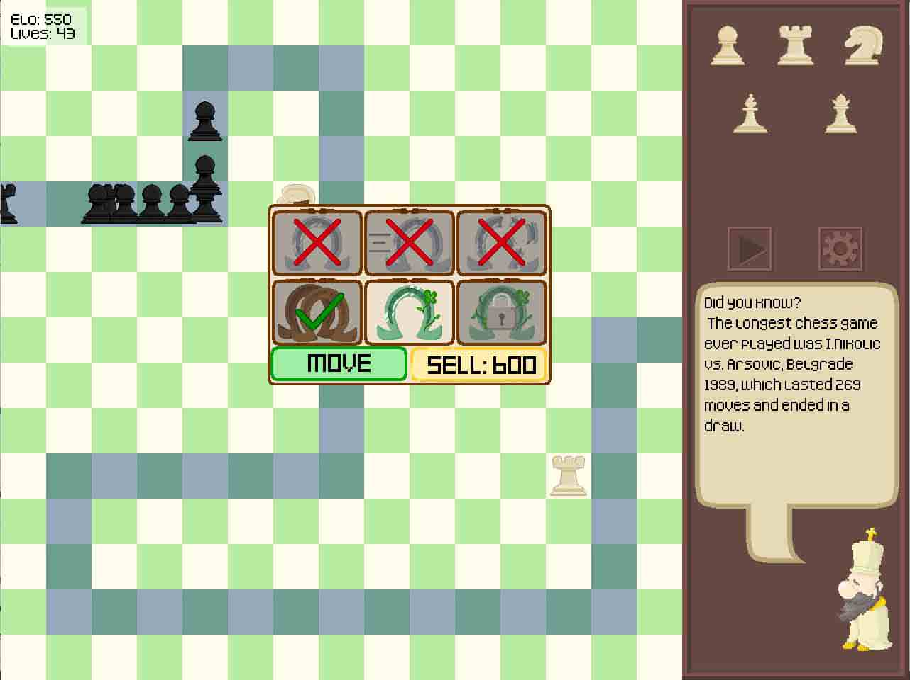
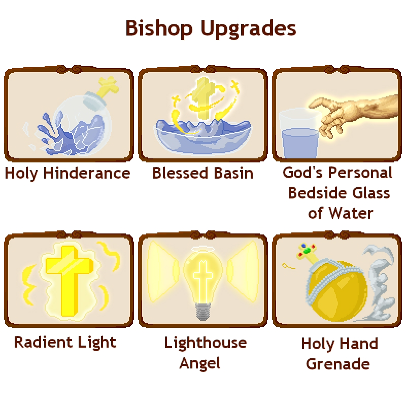
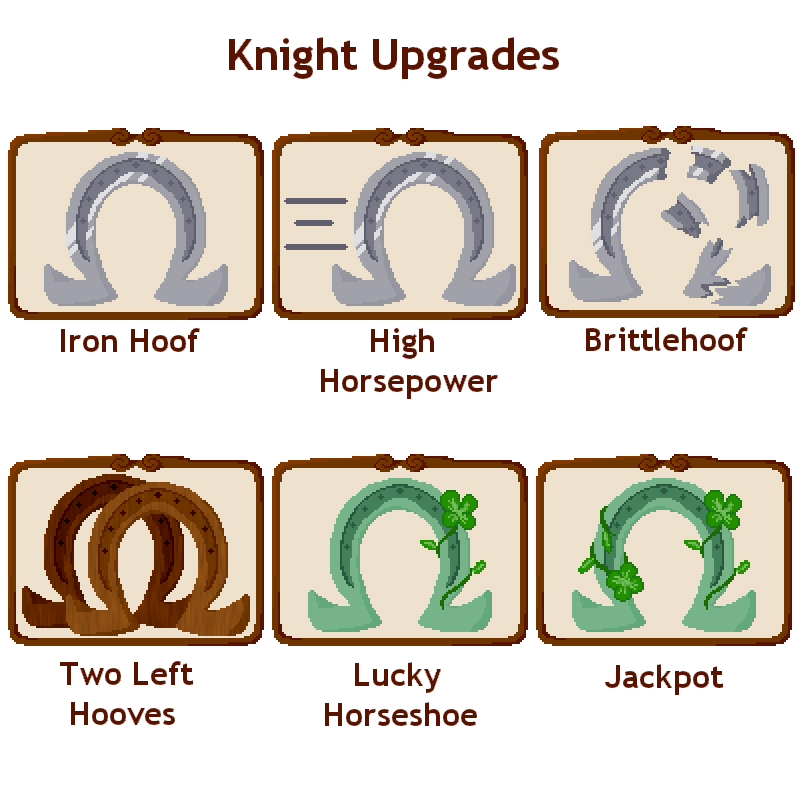

Go Home?
Play Here!
Fool's Gambit was a project done by me, Ollie Borris, and Mackenzie Ligon for Drexel's CI102 and CI103. We pretty much had full creative freedom, but had to work within Agile, use a Kanban board, and do weekly Sprint Reviews. We came in with ambitious plans, and despite being the first video game made for some of us, we achieved several stretch goals in addition to finishing the project.


Ollie worked primarily in backend programming, Mackenzie did frontend programming, and I programmed wherever needed. I did sprites for all UI elements.
We all worked together to design the game conceptually, and did many meetings and rounds of brainstorming for each tower's abilities and upgrades. I focused on designing the UI for the game.

